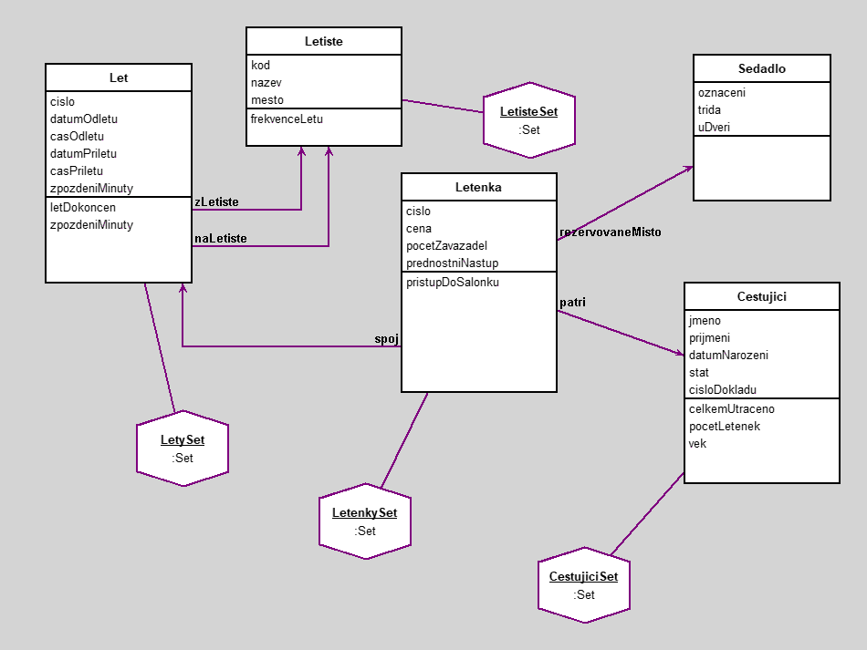

letenky
author(s): Jan Kolařík
Workspace
"Lety, ktere byly dokonceny a pristaly s nulovym zpozdenim"
LetySet select: [:m | m zpozdeniMinuty = 0 and: [ m letDokoncen = 'ano']]
"Lety, ktere bud zacinaly nebo koncily na letisti v Praze"
LetySet select: [:m | m zLetiste kod = 'PRG' or: [ m naLetiste kod = 'PRG']]
"Oblibeni zakaznici - cestujici, kteri utratili za letenky vice nez 5000"
CestujiciSet select: [:m | m celkemUtraceno > 5000 ]
"Lety, ktere probehly v prubehu roku 2022"
(LetySet select: [:m | m datumOdletu > '01-01-2022' asDate and: [ m datumPriletu isNil not and: [ m datumPriletu < '12-31-2022' asDate]]])
Workspace Objects
-
CestujiciSet :Set
-
LetenkySet :Set
-
LetisteSet :Set
-
LetySet :Set
Script
LetisteSet := Set new .
LetySet := Set new .
LetenkySet := Set new .
CestujiciSet := Set new .
" Sedadla - data ----------------------------------------------------------------------------------------------------------------------------------"
s1 := Sedadlo new .
s1 oznaceni: 'C30'; trida: 'economy'; uDveri: 0.
s2 := Sedadlo new .
s2 oznaceni: 'A12'; trida: 'business'; uDveri: 0.
s3 := Sedadlo new .
s3 oznaceni: 'C01'; trida: 'economy'; uDveri: 1.
s4 := Sedadlo new .
s4 oznaceni: 'B42'; trida: 'economy'; uDveri: 1.
s5 := Sedadlo new .
s5 oznaceni: 'Z02'; trida: 'firstClass'; uDveri: 0.
s6 := Sedadlo new .
s6 oznaceni: 'C22'; trida: 'economy'; uDveri: 0.
s7 := Sedadlo new .
s7 oznaceni: 'A18'; trida: 'business'; uDveri: 0.
" Letiste - data ----------------------------------------------------------------------------------------------------------------------------------"
letiste1 := Letiste new .
letiste1 kod: 'PRG'; nazev: 'Letiště Václava Havla Praha'; mesto: 'Praha' .
letiste2 := Letiste new .
letiste2 kod: 'AMS'; nazev: 'Amsterdam Airport Schiphol'; mesto: 'Amsterdam' .
letiste3 := Letiste new .
letiste3 kod: 'BTS'; nazev: 'Letište Bratislava'; mesto: 'Bratislava' .
letiste4 := Letiste new .
letiste4 kod: 'SPU'; nazev: 'Letište Split'; mesto: 'Split' .
letiste5 := Letiste new .
letiste5 kod: 'PMI'; nazev: 'Letište Palma de Mallorca'; mesto: 'Mallorca' .
letiste6 := Letiste new .
letiste6 kod: 'LHR'; nazev: 'Letište London Heathrow'; mesto: 'London' .
letiste7 := Letiste new .
letiste7 kod: 'JFK'; nazev: 'Mezinárodní letište Johna F. Kennedyho'; mesto: 'New York' .
letiste8 := Letiste new .
letiste8 kod: 'DXB'; nazev: 'Dubai International Airport'; mesto: 'Dubai' .
letiste9 := Letiste new .
letiste9 kod: 'RHO'; nazev: 'Letisko Rodos Diagoras'; mesto: 'Rodos' .
" Letiste - pridavani do setu"
LetisteSet add: letiste1; add: letiste2; add: letiste3; add: letiste4; add: letiste5; add: letiste6; add: letiste7; add: letiste8; add: letiste9.
" Lety - data ----------------------------------------------------------------------------------------------------------------------------------"
let1 := Let new .
let1 cislo: 109507; datumOdletu: '20-JAN-2023' asDate; datumPriletu: '20-JAN-2023' asDate; casOdletu: 1400; casPriletu: 1630; zpozdeniMinuty: 0.
let1 zLetiste: letiste1 .
let1 naLetiste: letiste2 .
let2 := Let new .
let2 cislo: 564120; datumOdletu: '08-AUG-2023' asDate; casOdletu: 2200 .
let2 zLetiste: letiste3 .
let2 naLetiste: letiste5 .
let3 := Let new .
let3 cislo: 451230; datumOdletu: '29-JAN-2023' asDate; datumPriletu: '29-JAN-2023' asDate; casOdletu: 0900; casPriletu: 1500; zpozdeniMinuty: 50 .
let3 zLetiste: letiste9 .
let3 naLetiste: letiste8 .
let4 := Let new .
let4 cislo: 550210; datumOdletu: '11-MAY-2023' asDate; datumPriletu: '11-MAY-2023' asDate; casOdletu: 1200; casPriletu: 1315; zpozdeniMinuty: 15 .
let4 zLetiste: letiste1 .
let4 naLetiste: letiste4 .
let5 := Let new .
let5 cislo: 9023153; datumOdletu: '12-DEC-2022' asDate; datumPriletu: '13-DEC-2022' asDate; casOdletu: 1900; casPriletu: 2345; zpozdeniMinuty: 0 .
let5 zLetiste: letiste5 .
let5 naLetiste: letiste6 .
let6 := Let new .
let6 cislo: 891003; datumOdletu: '22-NOV-2022' asDate; datumPriletu: '22-NOV-2022' asDate; casOdletu: 1800; casPriletu: 2350; zpozdeniMinuty: 210 .
let6 zLetiste: letiste9 .
let6 naLetiste: letiste3 .
let7 := Let new .
let7 cislo: 779514; datumOdletu: '15-NOV-2023' asDate; casOdletu: 1700 .
let7 zLetiste: letiste7 .
let7 naLetiste: letiste6 .
let8 := Let new .
let8 cislo: 109507; datumOdletu: '02-FEB-2023' asDate; datumPriletu: '02-FEB-2023' asDate; casOdletu: 1030; casPriletu: 1520; zpozdeniMinuty: 10 .
let8 zLetiste: letiste9 .
let8 naLetiste: letiste1 .
" Lety - pridavani do setu"
LetySet add: let1; add: let2; add: let3; add: let4; add: let5; add: let6; add: let7; add: let8 .
" Cestujici - data ----------------------------------------------------------------------------------------------------------------------------------"
c1 := Cestujici new .
c1 jmeno: 'Jan'; prijmeni: 'Novák'; datumNarozeni: '18-SEP-1996' asDate; stat: 'Česká republika'; cisloDokladu: 984106330 .
c2 := Cestujici new .
c2 jmeno: 'Kateřina'; prijmeni: 'Zemanová'; datumNarozeni: '09-JAN-1956' asDate; stat: 'Česká republika'; cisloDokladu: 848612015 .
c3 := Cestujici new .
c3 jmeno: 'Marmaduke'; prijmeni: 'Prisca'; datumNarozeni: '22-DEC-2001' asDate; stat: 'Velká Británie'; cisloDokladu: 486512130 .
c4 := Cestujici new .
c4 jmeno: 'Anastazja'; prijmeni: 'Archie'; datumNarozeni: '08-NOV-2003' asDate; stat: 'Polsko'; cisloDokladu: 788854102 .
c5 := Cestujici new .
c5 jmeno: 'Kristián'; prijmeni: 'Zdeno'; datumNarozeni: '28-JUN-1988' asDate; stat: 'Slovensko'; cisloDokladu: 481231285 .
c6 := Cestujici new .
c6 jmeno: 'Eva'; prijmeni: 'Pokorná'; datumNarozeni: '10-FEB-1956' asDate; stat: 'Česká republika'; cisloDokladu: 286121475 .
c7 := Cestujici new .
c7 jmeno: 'Jakub'; prijmeni: 'Dvořák'; datumNarozeni: '29-NOV-1996' asDate; stat: 'Česká republika'; cisloDokladu: 989156123 .
c8 := Cestujici new .
c8 jmeno: 'Tatiana'; prijmeni: 'Metod'; datumNarozeni: '12-SEP-1999' asDate; stat: 'Slovensko'; cisloDokladu: 786151023 .
c9 := Cestujici new .
c9 jmeno: 'Alena'; prijmeni: 'Marková'; datumNarozeni: '30-JAN-1978' asDate; stat: 'Česká republika'; cisloDokladu: 894612321 .
" Cestujici - pridavani do setu"
CestujiciSet add: c1; add: c2; add: c3; add: c4; add: c5; add: c6; add: c7; add: c8; add: c9.
" Letenky - data ----------------------------------------------------------------------------------------------------------------------------------"
letenka1 := Letenka new .
letenka1 cislo: 100068502; cena: 4600; pocetZavazadel: 1; prednostniNastup: 0 .
letenka1 spoj: let1 .
letenka1 rezervovaneMisto: s1 .
letenka1 patri: c1 .
letenka2 := Letenka new .
letenka2 cislo: 100077842; cena: 8000; pocetZavazadel: 2; prednostniNastup: 0 .
letenka2 spoj: let2 .
letenka2 rezervovaneMisto: s4 .
letenka2 patri: c6 .
letenka3 := Letenka new .
letenka3 cislo: 10010032; cena: 2200; pocetZavazadel: 0; prednostniNastup: 1 .
letenka3 spoj: let7 .
letenka3 rezervovaneMisto: s3 .
letenka3 patri: c7 .
letenka4 := Letenka new .
letenka4 cislo: 100052346; cena: 3500; pocetZavazadel: 1; prednostniNastup: 0 .
letenka4 spoj: let6 .
letenka4 rezervovaneMisto: s6 .
letenka4 patri: c8 .
letenka5 := Letenka new .
letenka5 cislo: 100044874; cena: 5000; pocetZavazadel: 1; prednostniNastup: 1 .
letenka5 spoj: let8 .
letenka5 rezervovaneMisto: s5 .
letenka5 patri: c7 .
" Letenky - pridavani do setu"
LetenkySet add: letenka1; add: letenka2; add: letenka3; add: letenka4; add: letenka5 .
Diagram

Classes
Letiste
|
instance variables
kod :String
mesto :String
nazev :String
|
methods
frekvenceLetu
initialize
kod
kod:
mesto
mesto:
nazev
nazev:
|
|
|
code of non-accessing methods:
-
frekvenceLetu
"vypocita v kolika letech se jednotliva letiste nachazeji (ze bud z letiste odleta nebo tam prileta)"
^(Let allInstances select: [:e | e zLetiste = self]) size
+ (Let allInstances select: [:e | e naLetiste = self]) size
-
initialize
"generated by Daskalos"
super initialize.
kod := nil.
nazev := nil.
mesto := nil.
Sedadlo
|
instance variables
oznaceni :String
trida :String
uDveri :Number
|
methods
initialize
oznaceni
oznaceni:
trida
trida:
uDveri
uDveri:
|
|
|
code of non-accessing methods:
Cestujici
|
instance variables
cisloDokladu :Number
datumNarozeni :Date
jmeno :String
prijmeni :String
stat :String
|
methods
celkemUtraceno
cisloDokladu
cisloDokladu:
datumNarozeni
datumNarozeni:
initialize
jmeno
jmeno:
pocetLetenek
prijmeni
prijmeni:
stat
stat:
vek
|
|
|
code of non-accessing methods:
-
celkemUtraceno
"vypocita, kolik celkem cestujici utratil celkove za letenky"
| select total |
total := 0.
select := (Letenka allInstances select: [:e | e patri = self])
collect: [:t | t cena].
select do: [:e | total := total + e].
^total
-
initialize
"generated by Daskalos"
super initialize.
jmeno := nil.
prijmeni := nil.
datumNarozeni := nil.
stat := nil.
cisloDokladu := nil.
-
pocetLetenek
"vypocita celkovy pocet letenek, co si jednotlivi cestujici zakoupili"
^(Letenka allInstances select: [:e | e patri = self]) size
-
vek
"vrati vek osoby (v pripade chybejicich atributu vraci -1)"
datumNarozeni isNil
ifTrue: [^-1]
ifFalse: [^((Date today subtractDate: datumNarozeni) / 365) truncated]
Letenka
|
instance variables
cena :Number
cislo :Number
patri :Object
pocetZavazadel :Number
prednostniNastup :Number
rezervovaneMisto :Object
spoj :Object
|
methods
cena
cena:
cislo
cislo:
doplatekExtraZavazadlo
initialize
kompenzaceZpozdeni
patri
patri:
pocetZavazadel
pocetZavazadel:
prednostniNastup
prednostniNastup:
rezervovaneMisto
rezervovaneMisto:
spoj
spoj:
|
|
|
code of non-accessing methods:
-
doplatekExtraZavazadlo
"v pripade, ze cestujici ma vice nez jedno zavazadlo, bude platit poplatek za extra zavazadlo"
pocetZavazadel > 1 ifTrue: [^'ano'] ifFalse: [^'ne']
-
initialize
"generated by Daskalos"
super initialize.
cislo := nil.
spoj := nil.
rezervovaneMisto := nil.
cena := nil.
patri := nil.
pocetZavazadel := nil.
prednostniNastup := nil.
-
kompenzaceZpozdeni
"pokud ma let zpozdeni 3 hodiny a vice, ma cestujici narok na kompenzaci"
spoj zpozdeniMinuty isNil not
ifTrue: [spoj zpozdeniMinuty > 179 ifTrue: [^'ano'] ifFalse: [^'ne']]
ifFalse: [^'ne']
Let
|
instance variables
casOdletu :Number
casPriletu :Number
cislo :Number
datumOdletu :Date
datumPriletu :Date
naLetiste :Object
zLetiste :Object
zpozdeniMinuty :Number
|
methods
casOdletu
casOdletu:
casPriletu
casPriletu:
cislo
cislo:
datumOdletu
datumOdletu:
datumPriletu
datumPriletu:
delkaLetu
initialize
letDokoncen
naLetiste
naLetiste:
zLetiste
zLetiste:
zpozdeniMinuty
zpozdeniMinuty:
|
|
|
code of non-accessing methods:
-
delkaLetu
"comment stating purpose of message"
-
initialize
"generated by Daskalos"
super initialize.
cislo := nil.
zLetiste := nil.
naLetiste := nil.
datumOdletu := nil.
casOdletu := nil.
datumPriletu := nil.
casPriletu := nil.
zpozdeniMinuty := nil.
-
letDokoncen
casPriletu isNil not ifTrue: [^'ano'] ifFalse: [^'ne']
Links
Data file and
class source.
Generated by Daskalos - Object Modeling Tutor (C) 2006 V. Merunka
April 25, 2023